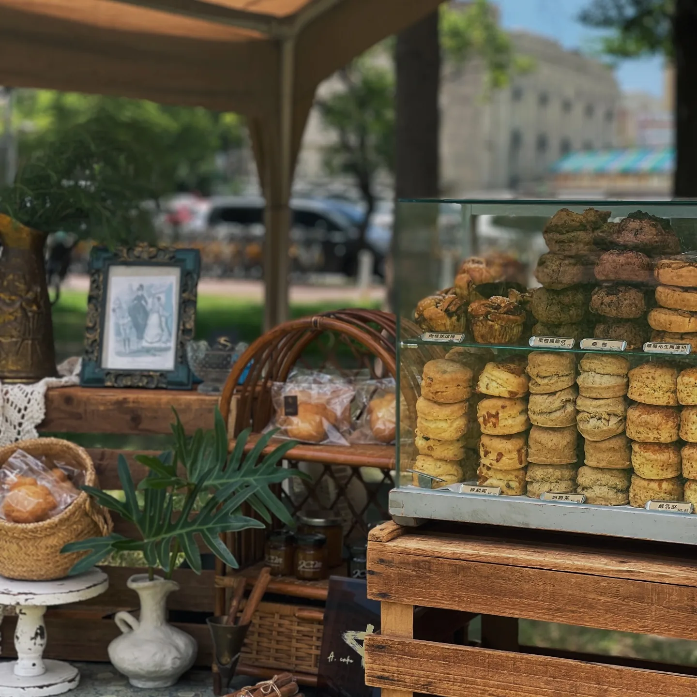
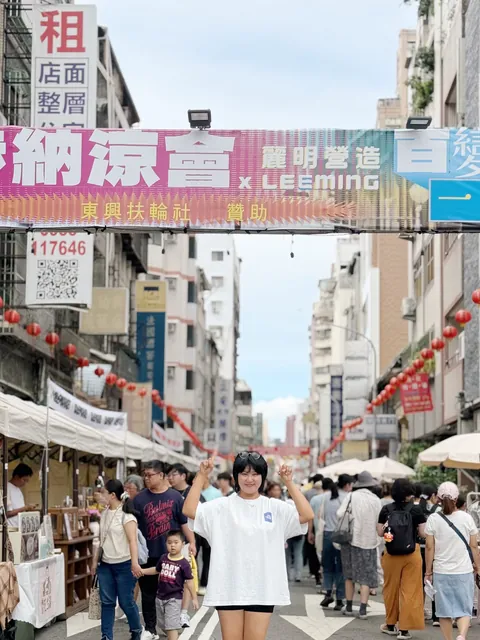
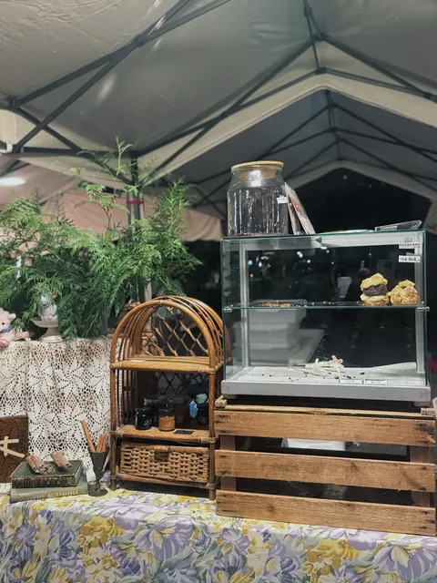

Upcoming
即將出攤
帶著司康走遍全台。每一場的口味都會依季節與大家許願調整，出攤前會在 IG 公告當場口味。
想吃的口味，先預留
- 到 IG 看當場的口味清單
- 私訊「口味、數量、訂購姓名、電話」
- 到攤位報名字直接取
- 11.20– 22週五–日臺南
森之市｜2026 珈琲與花物語・第四回
水交社眷村文化園區・12:00–18:00
免費入場 - 11.28– 29週六–日彰化
森之市｜2026 香菜市集
員林園・13:00–18:00
香菜主題・免費入場 - 12.04– 06週五–日臺北
交換禮物主題市集
臺北表演藝術中心
時間請見 IG 公告 - 12.12– 13週六–日高雄
聖誕主題市集
高雄市立美術館
時間請見 IG 公告 - 12.19– 20週六–日臺南
年末市集
地點請見 IG 公告
下一檔市集還在安排中，請追蹤 IG 等最新公告。
Past Markets
走過的市集
從灰熊綠展的森林、松菸的展覽館，到高雄美術館的草地，謝謝每一位來攤位找 A. cake 的你。



- FOR STOCKISTS EXHIBITION（東京）首度來臺臺北・松山文創園區 北向製菸工廠
- 灰熊綠展｜秋天裡。海精靈の呢喃苗栗・通霄海水浴場
- 野陶祭 YA TA FESTIVAL｜心田中的印記彰化・穀倉起藝文創園區
- 小世界市集臺中・臺灣民俗文物館
- 2026 歷史復活節臺北・臺北記憶倉庫
- 好好手感微笑市集｜島國禮作 2026 島南高雄・高雄市立美術館戶外廣場
- 森之市 Mori Market｜喫茶菓子嘉義・嘉義文創園區
- 小蝸牛市集臺北・松山文創園區
- 良の日高雄・高雄市立美術館廣場
- 好好手感微笑市集高雄・高雄市立美術館